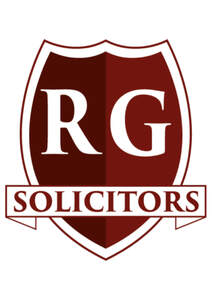

Trade Mark Journal No.2025/035 29 August 2025
UK00004250033 15 August 2025 (45)

- Class 45
- Law enforcement; Advisory services relating to the law; Litigation consultancy; Personal legal affairs consultancy; Legal conveyancing; Legal drafting; Patent attorney services; Legal consultancy services; Legal compliance auditing; Legal consultation in the field of taxation; Legal consultancy relating to patent mapping; Providing information in the field of law; Provision of legal research; Legal consultancy relating to intellectual property rights; Legal and judicial research services in the field of intellectual property; Provision of expert legal opinions; Litigation services [services of a lawyer]; Attorney services; Litigation advice; Paralegal services; Legal advice and representation; Legal advice; Pro bono legal services; Legal advocacy services; Legal consultation services; Expert consultancy relating to legal issues; Legal services in the field of immigration; Litigation services; Certification of legal documents; Intellectual property consultation; Legal research; Legal services; Licensing of intellectual property [legal services]; Patent licensing [legal services]; Professional advisory services relating to intellectual property rights; Advisory services relating to consumers rights [legal advice]; Legal services provided in relation to lawsuits; Legal services relating to the negotiation and drafting of contracts relating to intellectual property rights; Legal services relating to intellectual property rights; Conveyancing services [legal services]; Legal services relating to business; Conveyancing; Legal services in relation to the negotiation of contracts for others; Legal document preparation services.
RG Solicitors Ltd
Representative: Mohammad-raza Ghadiri